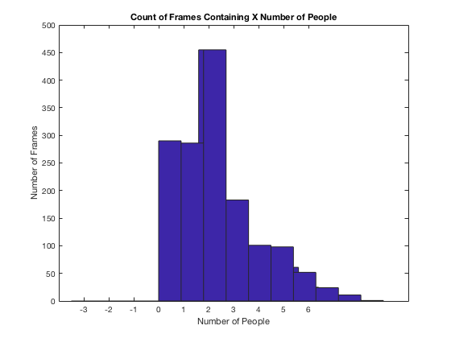

Contents
- setup
- Get unique number of IDs per image
- This does something but not the right thing. What I want is a histogram
- keep track of each person in a frame, for the next frame see if any of
- those people are over threshold.
- miraculously, this works!
- example output:
- TODO do something smarthere
- can't quite figure out why this isn't working...
% A significant portion of this exam is knowingly incorrect -- and % appropriately commented where I believe there to be bugs. Additionally, I % was unable to generate certain figures from the output, but have left % code commented out where I attempt. The end result should produce the % requested output files, but with some elements missing. Each question is % commented with code explanations and interpretations. % Date: 27 April 2019 % Author: Carolyn Saund % You work for the Glasgow City Council and are responsible for analysing data that % has been recorded by a CCTV camera in the city centre. This CCTV camera has filmed % a short section of Sauchiehall Street. The council wants to estimate how many % people pass through this section to understand how busy this part of the city % centre is. Using this knowledge, the council will then decide which parts of % the city centre should be invested in for pedestrian use. % You have been given a CCTV recording of 1 minute (recorded at 25 frames per second) % to analyse. This CCTV-recorded data has already been processed by a software that % detects people. The output of this software is a series of single frames (i.e., % static images) where positive integers in each frame indicate that a human has % been detected. Within a given frame, each detected human has been assigned a % unique positive integer (e.g., 4). However, the human detection software cannot % connect consecutive frames. This means that the same person can be assigned a % different number across different frames (e.g., 1 in one frame, but 5 in the next % frame), which makes counting the number of people who have passed through this % section problematic. % Your task is to resolve this problem by applying a simple heuristic (details % provided below) so that each person detected keeps the same identifier across % frames. % Data files % You have been given a folder which contains the following: % 1. imagesList.mat This file contains a list of the image filenames recorded by % the CCTV. % 2. imageFiles,afoldercontaining.pngfiles.Thesearetheimagefilesrecorded % by the CCTV. The second number in the file names indicates the temporal % order of the images starting at C0039_100000_INDS.png, i.e frame number 100000 % is the first image).
setup
clear all cd('/Users/carolynsaund/Desktop/exam/matlab_exam_2019/') od = pwd; % create vars to adjust for different fps and video lengths fps = 25; % frames per second len_vid = 60; % seconds of video starting_img = 100000; total_imgs_required = fps * len_vid;
Q1 (2 points) First, make sure that you have received all of the relevant image files. Check whether all image files in the list are included in the folder of image files. How many images are there? Are any frames missing? Display the results in the command window. 1 minute = 60s x 25 fps = 1500 images
% go through and check that at least images 0-1499 are there % For this question, I go through and check that images 0-1499 are there. img_files = dir('imageFiles'); img_file_pre_name = 'C0039_' img_file_post_name = '_INDS.png' num_images = length(img_files); % displaying results in command window ['Numer of images provided: ', num2str(num_images)] % interesting, we see that there are 1789 images in the folder. But we % should only care about the first 1500 of them. Let's check to see that at % least all of those are there! cd([od '/' 'imageFiles']); missing_img = false; % only care about our set of images for i = starting_img:(starting_img + total_imgs_required) % construct our names img_filename = [img_file_pre_name, num2str(100000), img_file_post_name]; img_exists = exist(img_filename, 'file') == 2; if (img_exists == false) 'img does not exist' missing_img = true; end end if (missing_img) 'there is at least one missing img in the necessary images. Proceed with caution.' else ['first ', num2str(total_imgs_required), ' images found'] end
img_file_pre_name =
'C0039_'
img_file_post_name =
'_INDS.png'
ans =
'Numer of images provided: 1789'
ans =
'first 1500 images found'
% Q2 (3 points) % Next, get an impression of what the images look like. To do this, randomly select % two frames with consecutive numbers AND with people detected in them. Use any image % display function to present these images in a single figure and positioned side-by- % side in a 1 x 2 subplot. % in this, I first get a random image, then I use a while loop to keep % getting images until I have found images that contain people. % get random image i = randi(total_imgs_required) + starting_img; img1 = imread([img_file_pre_name, num2str(i), img_file_post_name]); img2 = imread([img_file_pre_name, num2str(i+1), img_file_post_name]); % make sure there are people in both images people_found = (length(unique(img1)) > 1) && (length(unique(img2)) > 1); % keep going until we find two consecutive frames with people. while ~people_found i = randi(total_imgs_required) + starting_img; img1 = imread([img_file_pre_name, num2str(i), img_file_post_name]); img2 = imread([img_file_pre_name, num2str(i+1), img_file_post_name]); people_found = (length(unique(img1)) > 1) && (length(unique(img2)) > 1); end figure, i1 = subplot(1,2,1); title(i1,['Image ', num2str(i)]) image(img1) i2 = subplot(1,2,2); title(i2,['Image ', num2str(i+1)]) image(img2) f(1) = figure;
% Q3 (3 points) % Now, get an overview of how many people are detected across the images. % To do this, count the number of different people detected in each frame and % display the results as a histogram.
Get unique number of IDs per image
% in this, I go through and get the number of unique IDs per image to % create the histogram. % before we just went from 100000 -- 101499, but this time we're populating % the array which has to have indeces 1-15. figure, for i = 0:total_imgs_required img = imread([img_file_pre_name, num2str(i + 100000), img_file_post_name]); % subtract 1 because '0' is a unique value, but it represents % no person in the image. % use index i+1 because we start at index 1. num_people(i+1) = (length(unique(img)) - 1); hist(num_people) hold on end xlabel('Number of People') ylabel('Number of Frames') title('Count of Frames Containing X Number of People') f(2) = figure;
This does something but not the right thing. What I want is a histogram
with bins 1-1500 with the value of the array as the y axis. I am not entirely sure what the histogram should be.
% Q4 (4 points) % Your task is to estimate how many people walked through this section of the city % centre during the recording. However, in each frame, each detected person has been % assigned a unique number, which makes this estimation problematic. Your job now is % to infer whether, in consecutive frames, a given identifier represents the same % person or a different person. % To address this problem, calculate the amount of overlap between pixels that % identify a given person in one frame and the pixels that identify a given person % in the previous frame (i.e., how many pixels of person with ID number 4 in frame 2 % overlap with the person with ID number 5 in frame 1?). If there is high overlap % between detected persons, this likely indicates that these are in fact the same % person. Divide this amount by the number of pixels that the respective person % occupies in the current frame (i.e., calculate the percentage of pixels that % overlap). Calculate this value for all pairs of consecutive frames % ([1, 2], [2, 3], [3, 4] ...) and for all detected persons. Display the pooled % results as a histogram using 100 bins. Crop the figures on the y-axis so % that you can better see the shape of the distribution and to ignore most % of the entries for the lowest bin.
keep track of each person in a frame, for the next frame see if any of
those people are over threshold.
% store all of our comparisons in here.
miraculously, this works!
img_comparisons = repmat({}, total_imgs_required);
% go through every image.
for i = 1:total_imgs_required
% load in images
img1 = imread([img_file_pre_name, num2str(i + 99999), img_file_post_name]);
img2 = imread([img_file_pre_name, num2str(i + 100000), img_file_post_name]);
% get unique IDs per image
img1_person_ids = unique(img1);
img2_person_ids = unique(img2);
% each of these people, calculate overlap between them.
% for all people in img1
% TODO fix this so it does something sensible when there are no comparisons.
if(length(img1_person_ids) == 1)
continue;
elseif(length(img2_person_ids) == 1)
continue;
end
indiv_person_structs = {};
% start at 2, the first one will always be 0
for p1 = 2:length(img1_person_ids)
person1 = img1_person_ids((p1));
% initialize empty array for comparisons
indiv_person_comparisons = {};
% for all people in img2 (again, starting at 0)
for p2 = 2:length(img2_person_ids)
person2 = img2_person_ids((p2));
I1 = img1;
I2 = img2;
% make it so the matrix is all 0s and this person ID
I1(I1~=person1) = 0;
% in the second one, make it so the matrix is all 0s and a person ID
I2(I2~=person2) = 0;
% now we can treat these like logical matrices and compare
% where they overlap by adding and seeing if our overlap
% is the sum of the two values (meaning we added the two values
% together... meaning they overlapped).
comb = I1 + I2;
overlap = sum(comb(:) == person1 + person2);
orig = sum(I1(:) == person1);
% now make a struct to store it in our array for this
% person in img1
s_comp = struct('id', person2);
s_comp.comp_score = overlap/orig;
indiv_person_comparisons = [indiv_person_comparisons, s_comp];
end
% now we store this person array for this image
s_orig = struct('orig_id', person1);
s_orig.comp_scores = indiv_person_comparisons;
s_orig.time_seen = 0; % will need this later
indiv_person_structs{p1} = s_orig;
end
% compile it all into a cell array at the end!
img_comparisons{i} = {indiv_person_structs};
end
% Q5 (6 points) % Next, you must decide whether each person detected in each frame corresponds to the % same person in the neighbouring frame, or if it's a different person. To do this, % choose a cut-off value that roughly divides the histogram created in Q4 in two % (don?t worry ? your choice of cut-off value will not be marked but do make sure % that the cut- off is sensible). Now, for each pair of consecutive frames and for % each detected person in each frame, identify any persons in the preceding frame % whose level of pixel overlap exceeds that threshold. For any such persons, assign % the identity of the corresponding person in the previous frame to the person in % the current frame. % save this for while we're debugging the lower section. Don't need to % compute the above every time. % use this for debugging so I don't have to keep creating the % img_comparisons while I modify them in the code below % img_comparisons = img_comp_original;
example output:
img_comparisons{1}{1}
%ans = % % 1×3 cell array % % {0×0 double} {1×1 struct} {1×1 struct} % img_comparisons{1}{2} %ans = % % 1×3 cell array % % {0×0 double} {1×1 struct} {1×1 struct} %ans = % % struct with fields: % % orig_id: 4 % comp_scores: {[1×1 struct] [1×1 struct]} % time_seen: 0
img_comparisons = img_comp_original;
threshold = 0.6; % go through all the image comparisons we made. for i = 2:length(img_comparisons) % if there are no people in this image from above. % TODO do something sensible here if there are no people. if(isempty(img_comparisons{i})) continue; end cur_img = img_comparisons{i}{1}; % go through all of the IDs for this image for orig = 2:length(cur_img) % compare them with all the IDs for the next image for comp = 1:length(cur_img{orig}.comp_scores) comparison_cell = cur_img{orig}.comp_scores{comp}; if(comparison_cell.comp_score > threshold) % it's a match! % reassign the id to the previous image's id. We iterate % going forwards so this should be ok. % wait no we might at some point have multiple '4's going % through for example. % oh well keep moving on right now time is short. % ["changing id because value of ", comparison_cell.comp_score] % ["changing id from ", img_comparisons{i}{1}{orig}.orig_id, " to ", comparison_cell.id] img_comparisons{i}{1}{orig}.orig_id = comparison_cell.id; end end end end % Next, assume that a person cannot walk through this section of the city centre in % less than 3 seconds. Using this rule, treat all identified persons that appear to % pass through this section in less than 3 seconds as noise and remove them. % Display your results in a figure as a matrix where the x-axis corresponds to time % in seconds and the y-axis corresponds to unique persons. The appearance of each % person across time (i.e., across frames) will be represented as a 1 in the matrix, % all other values as 0. Use the colormap ?gray?. Add to the title the final inferred % number of persons that have passed through this section of the city centre, the % mean time needed to pass through this section and its standard deviation. % Finally, display a line plot showing the total number of persons that passed % through this section of the city centre at each time point. Use a thick red line. % Use solid green circles to mark each time point. Add meaningful x- and y-axis % labels and a title.
min_seconds = 3; time_to_pass_center = fps * min_seconds; % keep track of ids we see between frames. % since we have normalized all ids now this should be a sensible array. % todo initialize seen_ids to ids in first img seen_ids = []; % start at 2, look behind us. for i = 2:total_imgs_required % if there are no people in this image from above. % TODO something sensible here if(isempty(img_comparisons{i}) || isempty(img_comparisons{i-1})) continue; end cur_img = img_comparisons{i}{1}; last_img = img_comparisons{i-1}{1}; % keep track of the ids we've seen so far in this frame. ids_this_frame = []; % start at 2 cause of my array mess-up from before :) for person = 2:length(cur_img) % if we've seen this ID before in the last iteration if(ismember(cur_img{person}.orig_id, seen_ids)) % need to adjust to be 1 + the last one. % find whatever the time was last time for that id for last_id = 2:length(last_img) if(last_img{last_id}.orig_id == cur_img{person}.orig_id) cur_img{person}.time_seen = last_img{last_id}.time_seen + 1; % if we found it, get out of the loop. break; end end % if we HAVEN'T seent his ID before else % reset to 0 because IDs get reused. seen_ids = [seen_ids, cur_img{person}.orig_id]; cur_img{person}.time_seen = 1; end % keep track of all the ids we've seen this frame ids_this_frame = [ids_this_frame, cur_img{person}.orig_id]; end % now go through all of our ids from the previous frame. % if we haven't seen some ID this frame, check if it took at least % 3s to pass, then remove it from our seen_ids for seen_id = 1:length(seen_ids) % this might go beyond the right length since we're removing % elements if(seen_id > length(seen_ids)) continue; end % if we haven't seen an id in this frame this_id = seen_ids(seen_id); if ~(ismember(seen_ids(seen_id), ids_this_frame)) % go through all of the ids again and see if any of them match for check_ids = 2:length(cur_img) % check it took at least 3s to cross if(cur_img{check_ids}.orig_id == this_id) if(cur_img{check_ids}.time_seen < time_to_pass_center)
TODO do something smarthere
end end end % remove it from the list we check in next time seen_ids(seen_id) = []; end end end
% Q6 (2 points) % To share your results with your colleague, create a folder that contains three % .mat- files: % (1) the cut-off value you chose in Q5; % (2) a structure containing % (a) each raw frame, % (b) the corresponding matrix containing the numerical identifiers of % each person detected in the frame after you have applied the heuristic % in Q5 (i.e., the processed image), % (c) a value indicating the number of people detected in that frame, and % (d) a character array (i.e., string) indicating the time point of that % frame (e.g., ?Time point 10?); and % (3) a 3D matrix containing the processed images where the third dimension is time. collab_dir = [od '/collaborator_files']; mkdir(collab_dir); cd(collab_dir); save('threshold.mat', 'threshold'); img_struct = struct(); raw = {}; ids_in_frame = []; people_per_frame = []; ts = []; cd([od '/' 'imageFiles']) for i = 1:total_imgs_required ts(i) = 99999 + i; % get raw images % raw(i) = imread([img_file_pre_name, num2str(i + 99999), img_file_post_name]); % get processed images if(isempty(img_comparisons{i})) people_per_frame(i) = 0; else people_per_frame(i) = length(img_comparisons{i}{1}) - 1; % actually get ids ids = []; for people = 2:length(img_comparisons{i}{1}) ids(people) = img_comparisons{i}{1}{people}.orig_id; end % ids_in_frame(i) = ids; end end img_struct.raw = raw; img_struct.ids_in_frame = ids_in_frame; img_struct.people_per_frame = people_per_frame; img_struct.timestamp = ts; cd(collab_dir); save('image_data.mat', 'img_struct'); % TODO 3D matrix
Warning: Directory already exists.
% Q7 (2 points) % Save all created figures as coloured pdf files in another folder. Set % the sizes of the figures so that the figure contents are clearly visible and % that all text items (axis labels, titles, etc) are easy to read. figure_dir = [od, '/figures']; mkdir(figure_dir); cd(figure_dir);
Warning: Directory already exists.
can't quite figure out why this isn't working...
f is definitely a valid handle array of figures.
savefig(f,'figures.mat');
Error using savefig (line 43) H must be an array of handles to valid figures. Error in matlab_2402321S (line 493) savefig(f,'figures.mat');